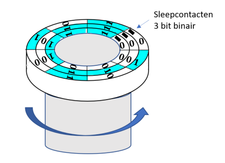
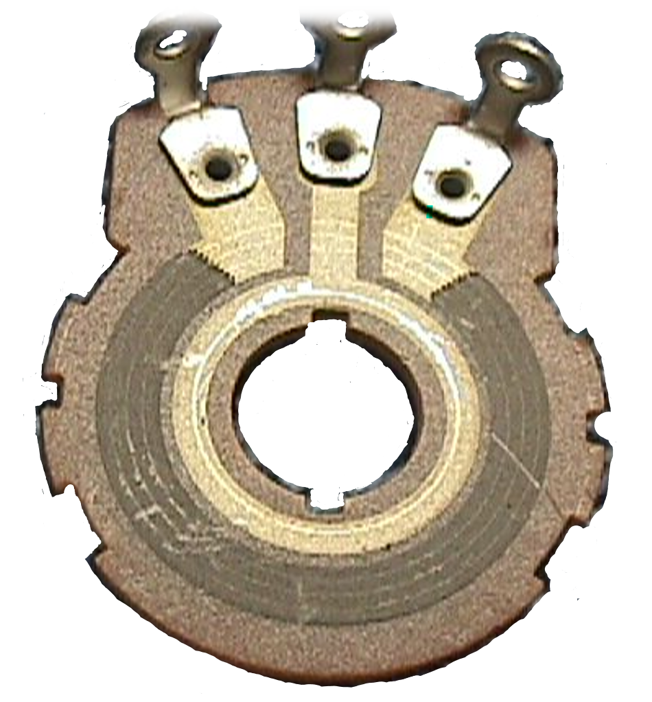

Analoge signalen
Een signaal is eender welke fysische hoeveelheid dat een bepaald type informatie draagt. In elektronica verwijst de term signaal naar de informatie die gedragen wordt door elektrische golven, zowel in een geleider als door een elektrisch veld.
Wat is belangrijk?
Je verklaart het verschil tussen een analoog signaal en een digitaal signaal.
Je geeft de definities van sampling en kwantisatie.
Analoge en digitale signalen
Signalen kan je onderverdelen in continue en discrete signalen. Onder een continu signaal wordt een signaal verstaan dat constant blijft of geleidelijk verandert zonder onderbreking. Discrete signalen zijn signalen die enkel uit bepaalde waarden bestaan. Zo is een digitaal signaal een discreet signaal vermits het bestaat uit een signaal dat de toestand van digitaal “nul”, digitaal “een” of eventueel een “onbepaalde” en/of “don’t care” bevat. Enkel deze waarden bestaan dan in het discrete digitale signaal en andere toestanden kunnen hierbij zich niet voordoen.
Een analoog signaal kan bestaan uit een herhalende golfvorm zoals bijvoorbeeld een sinusgolf. Een analoog signaal kan eveneens bestaan uit een continu variërend signaal zoals bijvoorbeeld een audiosignaal. Dit continu variërend signaal bevat bepaalde informatie welke kan bestaan uit muziek, bepaalde geluiden, gesproken woord, een bepaalde sensortoestand, ….
|  |  |
|---|---|
| As verdraaiing gemeten met digitale waarden (vb : postiebepaling aan de hand van 8 detecteerbare posities) | As verdraaiing op analoge manier (iedere stand van de as heeft zijn eigen specifieke waade) |
Figuur 1-4 : voorbeeld van digitaal en analoog encoding
Een ander voorbeeld van een analoog signaal is een in amplitude gemoduleerd signaal (AM) of een in frequentie gemoduleerd signaal (FM). In AM varieert bepaalde laagfrequent informatie, zoals een bepaalde stem of muziek, de amplitude van een hoogfrequente sinusgolf. Deze hoogfrequente sinusgolf wordt de draaggolf genoemd. Bij FM varieert de amplitude van de laagfrequente informatie de frequentie van een draaggolf en bijgvolg dus de frequentie van een hoogfrequente sinusgolf. Hoe hoger de amplitude van het informatiesignaal, hoe hoger de frequentie van de draaggolf wordt en omgekeerd.
In de natuur bevatten de meeste signalen een continu bereik van waarden tussen bepaalde grenzen. Zulke signalen worden aangeduid als analoge signalen. Stel bijvoorbeeld een potentiometer die gebruikt wordt als as-decoder. De uitgangsspanning kan continu worden gevarieerd binnen de grenzen van een voedingsspanning. De exacte waarde van de uitgangsspanning is in verhouding met de verdraaide positie van de as. Bekeken vanuit digitaal standpunt kan je de asverdraaiing onderverdelen in een aantal discrete stappen. Elk van deze stappen kan je dan associëren met een bepaalde digitale waarde. Op die wijze kan je de asverdraaiing digitaal registreren en deze informatie met bijvoorbeeld een controllerbordje verder verwerken. In figuur 1-4 (a) is dit principe weergegeven.
Analoge signalen zijn relatief eenvoudig. Ze hebben een hoge verwerkingssnelheid en hebben een relatief lage kost. De analoge signalen kunnen bijgevolg gemakkelijk natuurlijke fenomenen simuleren. Daarom worden ze vaak gebruikt bij het uitvoeren van het lineariseren van functies, waveshaping, transformeren van spanning naar stroom of omgekeerd en het vermenigvuldigen en/of mengen van signalen. Digitale schakelingen hebben een hoge ruis immuniteit, geen drift en het vermogen om snel te verwerken en snel diverse berekeningen uit te voeren. Om de prestaties en/of de kosten van gehele systemen te optimaliseren is het noodzakelijk in veel elektronische systemen om gebruik te maken van een combinatie van analoge en digitale signalen.
Zoals reeds gezegd hebben veel signalen hun oorsprong in natuurlijke fenonemen. Druk- of temperatuurmetingen zijn hiervan een goed voorbeeld. De uitgangssignalen van een transducer zijn typisch in analoge vorm. Een microfoon bijvoorbeeld genereerd een klein analoog signaal dat eerst moet versterkt worden via een versterker voordat het signaal kan worden omgevormd naar een digitaal signaal. Dit omvormen naar een digitaal signaal wordt dikwijls gedaan om storing te vermijden, het verder te verwerken of te verzenden. Omvorming van analoog naar digitaal kan worden uitgevoerd als een proces in twee stappen. Sampling en kwantisatie. Sampling is het proces waarmee het analoog signaal wordt onderverdeeld in zogenaamde “time-slices” welke het originele signaal benadert. Gedurende dit proces wordt steeds wat informatie verloren. Dit verlies weegt niet op tegen de voordelen aangaande ruisonderdrukking, het digitaal kunnen bewaren of het gemakkelijk te kunnen verzenden. Na sampling krijgen de “time-slices” een bepaalde numerieke waarde. Kwantisatie zet de amplituden van de time-slices om in getallen die verwerkt kunnen worden door digitale computers en/of andere digitale systemen. Figuur 1-5 toont het sampling en kwantisatieproces.

Figuur 1-5 : digitalisering van een analoog signaal
Meestal moeten digitale signalen terug geconverteerd worden in het originele analoge signaal om bruikbaar te zijn. Denk maar aan gedigitaliseerd geluid dat opgeslagen is in mp3-formaat. Dit signaal moet eerst terug naar een analoog signaal worden omgevormd voordat het hoorbaar gemaakt kan worden via een luidspreker.
Een GSM is een voorbeeld van een elektronisch systeem dat zowel analoge als digitale signalen bevat. Een visuele weergave van de elektronische elementen in zo’n GSM is weergegeven in figuur 1-6. Via de microfoon wordt het stemgeluid opgevangen en doorgestuurd naar een analoog naar digitaal convertor die het analoge signaal digitaliseerd. Vervolgens wordt dit digitale signaal gemoduleerd op een analoge draaggolf en verzonden naar een GSM-mast. Wanneer de GSM een inkomend signaal ontvangt van de GSM-mast, wordt digitale informatie ontvangen die gemoduleerd is op een analoge draaggolf. Dit signaal wordt versterkt door een zogenaame LNA (Low Noice Amplifier of ruisarme versterker) en vervolgens naar beneden geconverteerd naar een lagere analoge draaggolffrequentie. De digitale voicedata wordt dan gedemoduleerd en terug omgevormd naar een analoog signaal dat via een audiovermogenversterker naar de luidspreker wordt verstuurd.

Figuur 1-6 : blokschematische voorstelling van de elektronische componenten van een GSM-toestel
Test jezelf aangaande analoge signalen
- Wat is het verschil tussen een analoog signaal en een digitaal signaal?